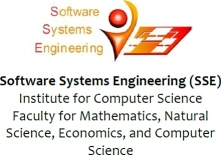
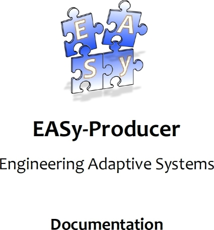

|  | |
|  | |
EASy-Producer is a Software Product Line Engineering (SPLE) tool which facilities the most recent trends and concepts in SPLE, such as large-scale Multi-Software Product Lines (MSPL), product line hierarchies, and staged configuration and instantiation.
This documentation includes the following guides and specifications: